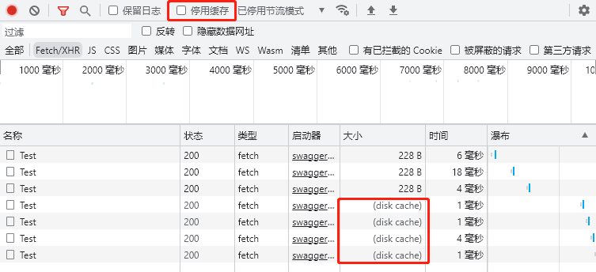

缓存
1. 客户端响应缓存
cache-control
如果服务器返回
cache-control:max-age=60，则表示服务器指示浏览器端“可以缓存这个响应内容60秒” 。
在需要进行缓存控制的控制器的操作方法上添加ResponseCacheAttribute这个特性，.net Core会自动添加cache-control报文头。
[ResponseCache(Duration = 20 )]
public DateTime GetServerNow()
{
return DateTime.Now;
}

当浏览器设置停用缓存时，则不走缓存。
2. 服务器端响应缓存 ResponseCache
Response Caching Middleware
- 如果ASP.NET Core中安装了“响应缓存中间件”，那么ASP.NET Core不仅会继续根据
[ResponseCache]设置来生成cache-control响应报文头来设置客户端缓存，而且服务器端也会按照[ResponseCache]的设置来对响应进行服务器端缓存。和客户端缓存的区别？来自多个不同客户端的相同请求。 - “响应缓存中间件”的好处：对于来自不同客户端的相同请求或者不支持客户端缓存的客户端，能降低服务器端的压力。
- 用法：
app.MapControllers()之前加上app.UseResponseCaching()。请确保app.UseCors()写到app.UseResponseCaching()之前。
3. ASP.NET Core内存缓存 IMemoryCache
- 把缓存数据放到应用程序的内存中。内存缓存中保存的是一系列的键值对，就像Dictionary类型一样。
- 内存缓存的数据保存在当前运行的网站程序的内存中，是和进程相关。因为在web服务器中，多个不同的网站是运行在不同的进程中的，因此不同网站的内存缓存是不会相互干扰的，而网站重启后，内存缓存中的所有数据也就都被清空了。
IMemoryCache接口常用方法

内存缓存用法
- 用法：
builder.Services.AddMemoryCache(); - 注入IMemoryCache接口，查看接口的方法：TryGetValue、Remove、Set、GetOrCreate、GetOrCreateAsync
- 用GetOrCreateAsync详解
public async Task<Book[]> GetBooks()
{
logger.LogInformation("开始执行GetBooks方法");
var items = await memCache.GetOrCreateAsync("AllBooks", async(e) =>
{
e.SlidingExpiration = TimeSpan.FromSeconds(15);//设置15秒滑动过期时间
//e.AbsoluteExpirationRelativeToNow = TimeSpan.FromSeconds(20); //设置20秒绝对过期时间
logger.LogInformation("从数据库中读取数据")
return await dbCtx.Books.ToArray();
});
logger.LogInformation("把数据返回给调用者");
return items;
}
缓存策略
- 绝对过期时间：设置一个绝对过期时间，超过这个时间自动清空缓存
- 滑动过期时间：设置一个滑动过期时间，例如10秒，在10秒内这个缓存有被调用则过期时间自动往后延长
public async Task<List<Book>> GetBooks()
{
_logger.LogInformation("开始执行GetBooks方法");
var items = await _memCache.GetOrCreateAsync("AllBooks", async (e) =>
{
//e.SlidingExpiration = TimeSpan.FromSeconds(10);//设置滑动过期时间，也就是说10秒内有人调用这个接口，这个缓存就不会过期
e.AbsoluteExpirationRelativeToNow = TimeSpan.FromSeconds(10);//设置绝对过期时间，10秒后缓存过期
_logger.LogInformation("从数据库中读取数据");
return await Task.FromResult(new List<Book>()
{
new Book{Title="好还是",Description="asd",Id = 1}
});
});
_logger.LogInformation("把数据返回给调用者");
return items;
}
缓存穿透
什么是缓存穿透？
简单理解就是未命中缓存，仍然去数据库中查询
看下面这段代码
public async Task<ActionResult<Book?>> GetBooks(Guid id)
{
string cacheKey = "Book" + id;
Book? b = memoryCache.Get<Book?>(cacheKey);
if(b == null)//缓存中没有数据
{
b = await dbCtx.Books.FindAsync(id);
}
if(b == null)
{
return NotFound("找不到此书");
}
return b；
}
发现当用户输入一个根本不存在的图书ID时，缓存中始终没有这本书的内容，导致每次请求都会访问数据库，从而出现缓存穿透。正确的做法是，即使查出来的数据为null，也要将他加入到缓存当中。
缓存雪崩
程序中设置了大量相同过期时间的缓存，缓存过期那一瞬间会造成大量的数据库访问，导致服务崩溃，解决方案是，设置动态的缓存过期时间，不要使缓存在同一时间过期。例如：设置过期时间时使用Random使过期时间不一致。
分布式缓存 IDistributedCache
常用的分布式缓存服务器有Redis、Memcached。.NET Core中提供了统一的分布式缓存服务器的操作接口IDistributedCache，无论使用什么类型的分布式缓存服务器，都可以使用统一的IDistributedCache接口进行操作。
IDistributedCache接口常用方法

下面演示一下使用Redis作为缓存服务器的用法
-
安装依赖
Microsoft.Extensions.Caching.StackExchangeRedis -
注入
StackExchangeRedisCache服务
builder.Services.AddStackExchangeRedisCache(opt =>
{
opt.Configuration = "127.0.0.1:6379,password=12345";
opt.InstanceName = "test_"
} );
- 使用IDistributedCache
public class TestController:ControllerBase
{
private readonly IDistributedCache disCache;
public TestController(IDistributedCache disCache)
{
this.disCache = disCache;
}
[HttpGet]
public string Now()
{
string s = disCache.GetString("Now");
if(s == null)
{
s = DateTime.Now.ToString();
var opt = new DistributedCacheEntryOptions();
opt.AbsoluteExpirationRelativeToNow = TimeSpan.FromSeconds(30);
disCache.SetString("Now", s, opt);
}
}
}